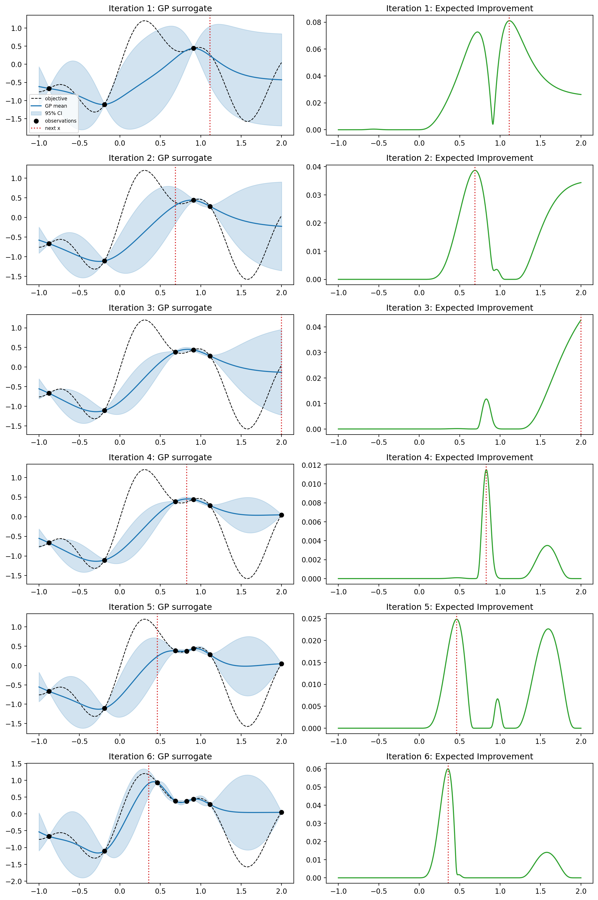
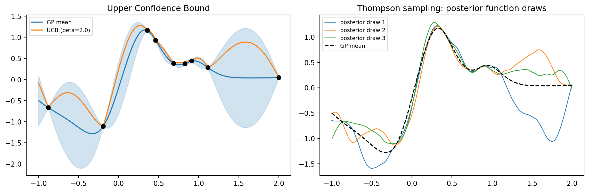

flowchart LR
A["Initial design"] --> B["Fit GP surrogate"]
B --> C["Optimize acquisition"]
C --> D["Evaluate expensive f"]
D --> E{"Budget left?"}
E -->|yes| B
E -->|no| F["Return best observed point"]
121 Bayesian Optimization
121.1 1. Motivation: Optimizing Expensive Black-Box Functions
Many of the most consequential optimization problems in machine learning and engineering share an awkward structure. We want to minimize (or maximize) a function \(f(\mathbf{x})\) over a domain \(\mathcal{X} \subseteq \mathbb{R}^d\), but \(f\) has properties that defeat the standard toolkit of gradient descent and convex optimization.
First, \(f\) is a black box. We can query it at a point \(\mathbf{x}\) and observe a value, but we have no analytic form, no gradient, and often no guarantee of convexity or even continuity in a useful sense. Second, \(f\) is expensive. Each evaluation might cost hours of GPU time, a wet-lab experiment, or a costly physical simulation. Third, observations may be noisy, returning \(y = f(\mathbf{x}) + \varepsilon\) rather than \(f(\mathbf{x})\) itself.
The canonical example is hyperparameter tuning. Training a deep network with a given learning rate, weight decay, and architecture width yields a validation loss, but a single evaluation can take many hours, and the loss surface over hyperparameters is non-convex and noisy. Grid search wastes evaluations on uninformative regions, and random search, while a respectable baseline, ignores everything learned from past queries.
Bayesian optimization (BO) addresses exactly this regime. The central idea is to spend computation on reasoning rather than on raw evaluations. We build a probabilistic surrogate model of \(f\) from the data observed so far, then use that model to decide where to query next. Because the surrogate is cheap to evaluate, we can afford to optimize an auxiliary criterion, the acquisition function, that balances exploration of uncertain regions against exploitation of promising ones. The result is a sample-efficient procedure that typically finds strong solutions in tens or hundreds of evaluations, where brute force methods would need orders of magnitude more.
121.1.1 1.1 The Sequential Decision Loop
The BO loop is conceptually simple. Given a dataset \(\mathcal{D}_n = \{(\mathbf{x}_i, y_i)\}_{i=1}^{n}\), we repeat:
- Fit a surrogate model to \(\mathcal{D}_n\), producing a posterior over \(f\).
- Optimize an acquisition function \(\alpha(\mathbf{x} \mid \mathcal{D}_n)\) to choose the next point \(\mathbf{x}_{n+1}\).
- Evaluate \(y_{n+1} = f(\mathbf{x}_{n+1}) + \varepsilon\) and append it to the dataset.
initialize D with a few quasi-random points
for t in 1..budget:
posterior = fit_surrogate(D)
x_next = argmax_x acquisition(x, posterior)
y_next = evaluate_expensive_function(x_next)
D = D union {(x_next, y_next)}
return best observed (x, y) in DThe two design choices that define a BO method are the surrogate model and the acquisition function. The remainder of this chapter develops each in turn.
| Node | Detail |
|---|---|
| Initial design | Sobol or LHS points |
| Fit GP surrogate | posterior mean and variance |
| Optimize acquisition | argmax over the domain |
| Evaluate expensive f | observe noisy value |
Formally we may cast BO as a sequential decision problem. With a budget of \(N\) evaluations and a value-of-information view, the Bayes-optimal policy maximizes the expected best value at termination,
\[ \max_{\pi}\; \mathbb{E}\!\left[\max_{i \le N} f(\mathbf{x}_i)\right], \]
where the expectation is over the prior on \(f\) and over observation noise. This full lookahead is intractable because it requires solving a dynamic program with a continuous state. The acquisition functions developed below are tractable one-step (myopic) approximations to this ideal policy.
121.2 2. Surrogate Models: Gaussian Processes
A surrogate model must do more than interpolate observed points. It must quantify uncertainty, because the acquisition function needs to know not just the predicted value at an untried \(\mathbf{x}\) but how confident that prediction is. The Gaussian process (GP) is the default surrogate precisely because it delivers a full predictive distribution in closed form.
121.2.1 2.1 Gaussian Process Priors
A Gaussian process is a distribution over functions such that any finite collection of function values is jointly Gaussian. It is specified by a mean function \(m(\mathbf{x})\), commonly taken to be zero after centering, and a covariance or kernel function \(k(\mathbf{x}, \mathbf{x}')\):
\[ f(\mathbf{x}) \sim \mathcal{GP}\bigl(m(\mathbf{x}),\, k(\mathbf{x}, \mathbf{x}')\bigr). \]
The kernel encodes our prior beliefs about smoothness and length scales. A widely used choice is the Matern 5/2 kernel,
\[ k_{5/2}(\mathbf{x}, \mathbf{x}') = \sigma_f^2 \left(1 + \sqrt{5}\,r + \tfrac{5}{3} r^2\right) \exp\!\left(-\sqrt{5}\,r\right), \quad r = \frac{\lVert \mathbf{x} - \mathbf{x}' \rVert}{\ell}, \]
where \(\ell\) is a length scale and \(\sigma_f^2\) a signal variance. The Matern 5/2 kernel is often preferred over the smoother squared-exponential (RBF) kernel for optimization because it assumes the objective is twice differentiable rather than infinitely smooth, which better matches realistic loss surfaces. In practice each input dimension receives its own length scale \(\ell_j\), a setup called automatic relevance determination that lets the model downweight irrelevant inputs.
121.2.2 2.2 Posterior Inference
Suppose we have observations \(\mathbf{y} = (y_1, \ldots, y_n)^\top\) at inputs \(X = (\mathbf{x}_1, \ldots, \mathbf{x}_n)\) with independent Gaussian noise of variance \(\sigma_n^2\). Let \(K\) be the \(n \times n\) matrix with entries \(K_{ij} = k(\mathbf{x}_i, \mathbf{x}_j)\), and let \(\mathbf{k}_*(\mathbf{x}) = (k(\mathbf{x}, \mathbf{x}_1), \ldots, k(\mathbf{x}, \mathbf{x}_n))^\top\). The derivation starts from the GP prior, which makes the test value \(f_* = f(\mathbf{x})\) and the noisy training targets jointly Gaussian,
\[ \begin{bmatrix} \mathbf{y} \\ f_* \end{bmatrix} \sim \mathcal{N}\!\left(\mathbf{0},\; \begin{bmatrix} K + \sigma_n^2 I & \mathbf{k}_* \\ \mathbf{k}_*^\top & k(\mathbf{x},\mathbf{x}) \end{bmatrix}\right). \]
Conditioning a joint Gaussian on a subvector is a standard identity: if \((\mathbf{a},\mathbf{b})\) are jointly Gaussian, then \(\mathbf{b}\mid\mathbf{a}\) has mean \(\boldsymbol{\mu}_b + \Sigma_{ba}\Sigma_{aa}^{-1}(\mathbf{a}-\boldsymbol{\mu}_a)\) and covariance \(\Sigma_{bb} - \Sigma_{ba}\Sigma_{aa}^{-1}\Sigma_{ab}\). Applying it with \(\mathbf{a}=\mathbf{y}\) and \(\mathbf{b}=f_*\) gives the posterior at a test point \(\mathbf{x}\), a Gaussian with mean and variance
\[ \mu_n(\mathbf{x}) = \mathbf{k}_*(\mathbf{x})^\top \left(K + \sigma_n^2 I\right)^{-1} \mathbf{y}, \]
\[ \sigma_n^2(\mathbf{x}) = k(\mathbf{x}, \mathbf{x}) - \mathbf{k}_*(\mathbf{x})^\top \left(K + \sigma_n^2 I\right)^{-1} \mathbf{k}_*(\mathbf{x}). \]
These two quantities, the predicted value \(\mu_n(\mathbf{x})\) and the predictive standard deviation \(\sigma_n(\mathbf{x})\), are the raw material for every acquisition function. The variance shrinks near observed points and grows in unexplored regions, which is exactly the signal that drives exploration.
121.2.3 2.3 Hyperparameters and Model Fitting
The kernel hyperparameters \(\boldsymbol{\theta} = (\sigma_f^2, \ell_1, \ldots, \ell_d, \sigma_n^2)\) are themselves learned, typically by maximizing the log marginal likelihood
\[ \log p(\mathbf{y} \mid X, \boldsymbol{\theta}) = -\tfrac{1}{2} \mathbf{y}^\top \left(K_{\boldsymbol{\theta}} + \sigma_n^2 I\right)^{-1} \mathbf{y} - \tfrac{1}{2} \log \det\!\left(K_{\boldsymbol{\theta}} + \sigma_n^2 I\right) - \tfrac{n}{2} \log 2\pi. \]
This objective automatically balances data fit against model complexity through the log-determinant term, an instance of Occam’s razor emerging from the marginal likelihood. A fully Bayesian treatment instead marginalizes over \(\boldsymbol{\theta}\) with a prior, often via slice sampling or Hamiltonian Monte Carlo, which improves robustness early in the search when data is scarce and point estimates of \(\boldsymbol{\theta}\) are unreliable.
121.2.4 2.4 Cost and Alternatives
The matrix inversion in the posterior costs \(O(n^3)\), which is harmless for the small budgets typical of BO but becomes a bottleneck past a few thousand points. When evaluations are cheaper or higher dimensional, practitioners turn to alternative surrogates. Random forests, used in the SMAC system, handle categorical and conditional parameters gracefully. The Tree-structured Parzen Estimator (TPE), used in Hyperopt and Optuna, models \(p(\mathbf{x} \mid y)\) rather than \(p(y \mid \mathbf{x})\) and scales well to high-dimensional and conditional search spaces. Bayesian neural networks and deep kernel learning offer further scalability at the cost of more delicate tuning.
121.3 3. Acquisition Functions
The acquisition function turns the surrogate’s posterior into a concrete decision about where to sample. Every useful acquisition function trades off exploitation, querying where \(\mu_n(\mathbf{x})\) predicts good values, against exploration, querying where \(\sigma_n(\mathbf{x})\) is large. We adopt the convention of maximizing \(f\), and write \(f^+ = \max_i y_i\) for the best value observed so far.
flowchart TD
P["GP posterior at x"] --> M["Mean mu_n of x"]
P --> S["Std sigma_n of x"]
M --> A["Acquisition function"]
S --> A
A --> PI["PI, Phi of standardized gap"]
A --> EI["EI, mean term plus uncertainty term"]
A --> UCB["UCB, mu plus sqrt beta times sigma"]
A --> TS["Thompson, argmax of a posterior draw"]
| Node | Role |
|---|---|
| Mean mu_n of x | exploitation signal |
| Std sigma_n of x | exploration signal |
121.3.1 3.1 Probability of Improvement
The earliest acquisition function, probability of improvement (PI), asks how likely a point is to beat the incumbent by at least a margin \(\xi \ge 0\):
\[ \alpha_{\text{PI}}(\mathbf{x}) = \Phi\!\left(\frac{\mu_n(\mathbf{x}) - f^+ - \xi}{\sigma_n(\mathbf{x})}\right), \]
where \(\Phi\) is the standard normal cumulative distribution function. PI is intuitive but tends to be overly greedy when \(\xi\) is small, because a point with a tiny but near-certain improvement scores higher than a point with a large but uncertain one. The margin \(\xi\) must be tuned to inject exploration, which is a practical nuisance.
121.3.2 3.2 Expected Improvement
Expected improvement (EI) repairs the greediness of PI by accounting for the magnitude of improvement, not just its probability. Define the improvement at \(\mathbf{x}\) as \(I(\mathbf{x}) = \max\bigl(f(\mathbf{x}) - f^+, 0\bigr)\). Taking the expectation under the GP posterior yields a closed form. Writing \(z = \frac{\mu_n(\mathbf{x}) - f^+ - \xi}{\sigma_n(\mathbf{x})}\),
\[ \alpha_{\text{EI}}(\mathbf{x}) = \bigl(\mu_n(\mathbf{x}) - f^+ - \xi\bigr)\,\Phi(z) + \sigma_n(\mathbf{x})\,\phi(z), \]
for \(\sigma_n(\mathbf{x}) > 0\), and \(\alpha_{\text{EI}}(\mathbf{x}) = 0\) otherwise, where \(\phi\) is the standard normal density. The two terms have a clean reading. The first rewards a high posterior mean (exploitation), and the second rewards high posterior uncertainty (exploration). EI requires no tuning to behave reasonably, with \(\xi = 0\) a common default, which is a large part of why it remains the workhorse acquisition function.
To derive the closed form, write the posterior at \(\mathbf{x}\) as \(f \sim \mathcal{N}(\mu, \sigma^2)\) with \(\mu = \mu_n(\mathbf{x})\) and \(\sigma = \sigma_n(\mathbf{x})\), and let \(\tau = f^+ + \xi\) be the improvement threshold. By definition
\[ \alpha_{\text{EI}} = \mathbb{E}\bigl[\max(f - \tau, 0)\bigr] = \int_{\tau}^{\infty} (f - \tau)\,\frac{1}{\sigma}\,\phi\!\left(\frac{f - \mu}{\sigma}\right)\,df. \]
Substitute \(u = (f - \mu)/\sigma\), so \(f = \mu + \sigma u\), \(df = \sigma\,du\), and the lower limit becomes \(-z\) with \(z = (\mu - \tau)/\sigma\):
\[ \alpha_{\text{EI}} = \int_{-z}^{\infty} (\mu - \tau + \sigma u)\,\phi(u)\,du = (\mu - \tau)\!\int_{-z}^{\infty}\!\phi(u)\,du \;+\; \sigma\!\int_{-z}^{\infty}\! u\,\phi(u)\,du. \]
The first integral is \(1 - \Phi(-z) = \Phi(z)\) by symmetry. The second uses \(\phi'(u) = -u\,\phi(u)\), so \(\int_{-z}^{\infty} u\,\phi(u)\,du = [-\phi(u)]_{-z}^{\infty} = \phi(-z) = \phi(z)\). Collecting terms recovers \(\alpha_{\text{EI}} = (\mu - \tau)\Phi(z) + \sigma\phi(z)\), exactly the formula above. The executable cell below verifies this identity symbolically with SymPy.
121.3.3 3.3 Upper Confidence Bound
The GP upper confidence bound (UCB) takes an optimistic view, scoring each point by an upper quantile of its posterior:
\[ \alpha_{\text{UCB}}(\mathbf{x}) = \mu_n(\mathbf{x}) + \beta_t^{1/2}\,\sigma_n(\mathbf{x}). \]
The parameter \(\beta_t\) controls the exploration weight directly and transparently. The decomposition makes the exploration-exploitation tradeoff explicit: the term \(\mu_n(\mathbf{x})\) is pure exploitation, the term \(\beta_t^{1/2}\sigma_n(\mathbf{x})\) is pure exploration, and \(\beta_t\) is the exchange rate between them. Setting \(\beta_t = 0\) collapses UCB to greedy mean maximization, which can stall in a local optimum, while a large \(\beta_t\) degenerates to near-uniform exploration. Its great virtue is theoretical: Srinivas and colleagues showed that with a suitable schedule for \(\beta_t\), growing logarithmically in the iteration count, GP-UCB achieves sublinear cumulative regret, meaning the average gap to the optimum vanishes as the budget grows. Concretely, the cumulative regret \(R_T = \sum_{t=1}^{T} \bigl(f(\mathbf{x}^\star) - f(\mathbf{x}_t)\bigr)\) satisfies \(R_T = O^\star(\sqrt{T\,\gamma_T\,\beta_T})\) with high probability, where \(\gamma_T\) is the maximum information gain after \(T\) rounds. Because \(R_T / T \to 0\), the procedure is no-regret. This gives UCB a firmer regret-bound footing than EI, though in practice the prescribed \(\beta_t\) is often conservative and tuned down.
121.3.4 3.4 Thompson Sampling
Thompson sampling takes a sampling-based rather than a deterministic view. At each step we draw a single function \(\tilde{f}\) from the GP posterior and then select the point that maximizes that sampled function:
\[ \mathbf{x}_{n+1} = \arg\max_{\mathbf{x} \in \mathcal{X}} \tilde{f}(\mathbf{x}), \qquad \tilde{f} \sim p(f \mid \mathcal{D}_n). \]
Because the draw reflects the full posterior, regions of high uncertainty are explored automatically in proportion to the probability that they contain the optimum, with no explicit exploration parameter. Exact posterior samples over a continuum are intractable, so implementations use approximations such as random Fourier features, which represent the sampled function as a finite weighted sum of random basis functions. Thompson sampling is especially attractive for parallel and batch settings, where drawing several independent posterior samples yields a diverse batch of query points almost for free.
121.3.5 3.5 Information-Theoretic and Knowledge-Gradient Criteria
A more recent family targets information directly. Entropy search and predictive entropy search choose the point that most reduces the entropy of the posterior over the location of the optimum \(\mathbf{x}^\star\), and max-value entropy search does the same for the optimal value \(f(\mathbf{x}^\star)\). The knowledge gradient measures the expected increase in the best posterior mean after a query, making it well suited to noisy and decoupled settings. These criteria often outperform EI on hard problems but cost considerably more to compute, since each requires nested expectations or sampling over the optimum.
121.3.6 3.6 Optimizing the Acquisition Function
A subtlety that newcomers underestimate: the acquisition function is itself a function over \(\mathcal{X}\) that must be maximized at every iteration. It is cheap to evaluate but usually multimodal and non-convex. Standard practice combines a coarse search, evaluating the acquisition on many quasi-random points, with local refinement by a gradient-based optimizer such as L-BFGS started from the best candidates, repeated from several restarts. Getting this inner optimization right matters, because a poorly maximized acquisition function silently degrades the whole procedure.
121.3.7 3.7 Worked Implementation
The following code runs a complete Bayesian optimization loop on a one-dimensional objective with a GP surrogate and expected improvement. It plots the surrogate and the acquisition function at every iteration, draws UCB and Thompson-sampling views of the final posterior, prints a results table, and verifies the EI closed form symbolically with SymPy. For real projects the open-source libraries Optuna and scikit-optimize automate this same loop with mature search spaces, pruners, and visualizations.
Code
import numpy as np
import pandas as pd
import matplotlib.pyplot as plt
from scipy.stats import norm
from sklearn.gaussian_process import GaussianProcessRegressor
from sklearn.gaussian_process.kernels import Matern, ConstantKernel
import sympy as sp
rng = np.random.default_rng(0)
# --- SymPy check of the closed-form Expected Improvement formula ---
# EI = E[max(f - f_plus, 0)] for f ~ N(mu, sigma^2), threshold = f_plus + xi.
t, mu_s, sigma_s, fp, xi = sp.symbols(
"t mu sigma f_plus xi", real=True, positive=True)
phi = lambda u: sp.exp(-u**2 / 2) / sp.sqrt(2 * sp.pi)
Phi = lambda u: (1 + sp.erf(u / sp.sqrt(2))) / 2
pdf = phi((t - mu_s) / sigma_s) / sigma_s
threshold = fp + xi
integral = sp.integrate((t - threshold) * pdf, (t, threshold, sp.oo))
z_sym = (mu_s - fp - xi) / sigma_s
closed_form = (mu_s - fp - xi) * Phi(z_sym) + sigma_s * phi(z_sym)
print("SymPy EI check (integral - closed form) =",
sp.simplify(integral - closed_form))
# --- 1D objective to maximize ---
def objective(x):
return np.sin(3 * x) + 0.5 * np.sin(7 * x) - 0.1 * (x - 0.7) ** 2
bounds = (-1.0, 2.0)
grid = np.linspace(bounds[0], bounds[1], 600).reshape(-1, 1)
noise = 1e-3
def expected_improvement(mu, std, f_plus, xi=0.01):
std = np.maximum(std, 1e-9)
imp = mu - f_plus - xi
z = imp / std
ei = imp * norm.cdf(z) + std * norm.pdf(z)
ei[std < 1e-9] = 0.0
return ei
kernel = ConstantKernel(1.0, (1e-2, 1e2)) * Matern(length_scale=0.3, nu=2.5)
X = rng.uniform(bounds[0], bounds[1], size=(3, 1))
y = objective(X).ravel()
n_iter = 6
fig, axes = plt.subplots(n_iter, 2, figsize=(12, 3 * n_iter))
history = []
for i in range(n_iter):
gp = GaussianProcessRegressor(kernel=kernel, alpha=noise, normalize_y=True,
n_restarts_optimizer=5, random_state=0)
gp.fit(X, y)
mu, std = gp.predict(grid, return_std=True)
f_plus = y.max()
ei = expected_improvement(mu, std, f_plus)
x_next = grid[np.argmax(ei)]
y_next = objective(x_next).item()
history.append({"iter": i + 1, "n_obs": len(X),
"x_next": float(x_next[0]), "y_next": float(y_next),
"best_y": float(max(f_plus, y_next)),
"max_EI": float(ei.max())})
ax_gp, ax_ac = axes[i]
ax_gp.plot(grid, objective(grid), "k--", lw=1, label="objective")
ax_gp.plot(grid, mu, "C0", label="GP mean")
ax_gp.fill_between(grid.ravel(), mu - 1.96 * std, mu + 1.96 * std,
color="C0", alpha=0.2, label="95% CI")
ax_gp.scatter(X, y, c="k", zorder=5, label="observations")
ax_gp.axvline(x_next[0], color="C3", ls=":", label="next x")
ax_gp.set_title(f"Iteration {i + 1}: GP surrogate")
if i == 0:
ax_gp.legend(fontsize=7, loc="lower left")
ax_ac.plot(grid, ei, "C2")
ax_ac.axvline(x_next[0], color="C3", ls=":")
ax_ac.set_title(f"Iteration {i + 1}: Expected Improvement")
X = np.vstack([X, x_next.reshape(1, -1)])
y = np.append(y, y_next)
fig.tight_layout()
# --- UCB and Thompson sampling on the final posterior ---
gp = GaussianProcessRegressor(kernel=kernel, alpha=noise, normalize_y=True,
n_restarts_optimizer=5, random_state=0)
gp.fit(X, y)
mu, std = gp.predict(grid, return_std=True)
beta = 2.0
ucb = mu + np.sqrt(beta) * std
samples = gp.sample_y(grid, n_samples=3, random_state=1)
fig2, (axu, axt) = plt.subplots(1, 2, figsize=(12, 4))
axu.plot(grid, mu, "C0", label="GP mean")
axu.plot(grid, ucb, "C1", label=f"UCB (beta={beta})")
axu.fill_between(grid.ravel(), mu - 1.96 * std, mu + 1.96 * std,
color="C0", alpha=0.2)
axu.scatter(X, y, c="k", zorder=5)
axu.set_title("Upper Confidence Bound")
axu.legend(fontsize=8)
for k in range(samples.shape[1]):
axt.plot(grid, samples[:, k], lw=1, label=f"posterior draw {k + 1}")
axt.plot(grid, mu, "k--", lw=1.5, label="GP mean")
axt.set_title("Thompson sampling: posterior function draws")
axt.legend(fontsize=8)
fig2.tight_layout()
results = pd.DataFrame(history)
print("\nBayesian optimization trace (Expected Improvement):")
print(results.to_string(index=False))
true_opt = grid[np.argmax(objective(grid))][0]
print(f"\nTrue optimum on grid: x* = {true_opt:.4f}, f* = {objective(true_opt):.4f}")
best_idx = np.argmax(y)
print(f"BO best found: x = {X[best_idx, 0]:.4f}, y = {y[best_idx]:.4f}")
print(f"Optimality gap: {objective(true_opt) - y[best_idx]:.4e}")
print("\nPractice with the open-source tools Optuna and scikit-optimize.")
plt.show()SymPy EI check (integral - closed form) = 0
Bayesian optimization trace (Expected Improvement):
iter n_obs x_next y_next best_y max_EI
1 3 1.113523 0.284356 0.439625 0.081057
2 4 0.687813 0.383685 0.439625 0.038677
3 5 2.000000 0.046888 0.439625 0.042686
4 6 0.828047 0.375537 0.439625 0.011505
5 7 0.462437 0.929908 0.929908 0.024827
6 8 0.357262 1.165211 1.165211 0.060008
True optimum on grid: x* = 0.3072, f* = 1.1995
BO best found: x = 0.3573, y = 1.1652
Optimality gap: 3.4270e-02
Practice with the open-source tools Optuna and scikit-optimize.

using GaussianProcesses, Distributions, Random, Printf
Random.seed!(0)
objective(x) = sin(3x) + 0.5sin(7x) - 0.1(x - 0.7)^2
lo, hi = -1.0, 2.0
grid = collect(range(lo, hi; length=600))
# Expected improvement (maximization), threshold f_plus + xi
function ei(mu, sd, fplus; xi=0.01)
sd = max.(sd, 1e-9)
z = (mu .- fplus .- xi) ./ sd
(mu .- fplus .- xi) .* cdf.(Normal(), z) .+ sd .* pdf.(Normal(), z)
end
X = lo .+ (hi - lo) .* rand(3)
y = objective.(X)
for it in 1:6
gp = GP(reshape(X, 1, :), y, MeanZero(), Matern(5//2, 0.0, 0.0), -3.0)
mu, var = predict_y(gp, reshape(grid, 1, :))
sd = sqrt.(max.(var, 0.0))
a = ei(mu, sd, maximum(y))
xn = grid[argmax(a)]
yn = objective(xn)
@printf("iter %d x_next=%.4f y_next=%.4f best=%.4f\n",
it, xn, yn, max(maximum(y), yn))
push!(X, xn); push!(y, yn)
end
xs = argmax(y)
@printf("Best found: x=%.4f y=%.4f\n", X[xs], y[xs])// Sketch: 1D Bayesian optimization with a GP surrogate and expected
// improvement. Uses the `friedrich` GP crate and `statrs` for the normal.
use friedrich::gaussian_process::GaussianProcess;
use friedrich::kernel::Matern2;
use statrs::distribution::{ContinuousCDF, Continuous, Normal};
fn objective(x: f64) -> f64 {
(3.0 * x).sin() + 0.5 * (7.0 * x).sin() - 0.1 * (x - 0.7).powi(2)
}
fn ei(mu: f64, sd: f64, f_plus: f64, xi: f64) -> f64 {
let n = Normal::new(0.0, 1.0).unwrap();
let sd = sd.max(1e-9);
let z = (mu - f_plus - xi) / sd;
(mu - f_plus - xi) * n.cdf(z) + sd * n.pdf(z)
}
fn main() {
let (lo, hi) = (-1.0_f64, 2.0_f64);
let grid: Vec<f64> = (0..600).map(|i| lo + (hi - lo) * i as f64 / 599.0).collect();
let mut xs: Vec<Vec<f64>> = vec![vec![-0.5], vec![0.4], vec![1.3]];
let mut ys: Vec<f64> = xs.iter().map(|x| objective(x[0])).collect();
for it in 0..6 {
let gp = GaussianProcess::builder(xs.clone(), ys.clone())
.set_kernel(Matern2::default())
.fit();
let f_plus = ys.iter().cloned().fold(f64::MIN, f64::max);
let (mut best_a, mut best_x) = (f64::MIN, grid[0]);
for &g in &grid {
let mu = gp.predict(&vec![g]);
let var = gp.predict_variance(&vec![g]);
let a = ei(mu, var.max(0.0).sqrt(), f_plus, 0.01);
if a > best_a { best_a = a; best_x = g; }
}
let y_next = objective(best_x);
println!("iter {} x_next={:.4} y_next={:.4}", it + 1, best_x, y_next);
xs.push(vec![best_x]);
ys.push(y_next);
}
}121.4 4. Hyperparameter Tuning Applications
Hyperparameter optimization is the application that brought BO into the machine learning mainstream, following the demonstration by Snoek and colleagues that BO could tune deep networks more effectively than human experts.
121.4.1 4.1 Framing the Search Space
The objective is the validation performance of a model as a function of its hyperparameters, \(f(\mathbf{x}) = \text{ValPerf}(\text{train}(\mathbf{x}))\). The search space mixes types. Learning rate and weight decay are continuous and best searched on a logarithmic scale, since they range over several orders of magnitude. Layer counts and batch sizes are integers. Choices like the optimizer or activation function are categorical, and some parameters are conditional, relevant only when another takes a particular value, such as momentum existing only for SGD. GPs handle continuous and log-scaled parameters naturally; integer and categorical parameters require rounding, specialized kernels, or one-hot encodings, and conditional structure is where tree-based surrogates like TPE and SMAC have an edge.
121.4.2 4.2 Multi-Fidelity Methods
The defining cost in hyperparameter tuning is that each evaluation trains a model. Multi-fidelity BO exploits cheap approximations of the true objective, such as training for fewer epochs, on a subset of data, or at lower resolution. Hyperband allocates budget through successive halving, aggressively stopping unpromising configurations early. BOHB combines Hyperband’s bandit-style budget allocation with a TPE model that decides which configurations to try, capturing both the efficiency of early stopping and the sample efficiency of a model-based search. The Freeze-Thaw approach models entire learning curves, pausing and resuming runs based on extrapolated performance.
121.4.3 4.3 Batch, Parallel, and Constrained Settings
Real tuning happens on clusters, so we want to evaluate several configurations at once. Naive parallelism would query the same acquisition optimum repeatedly, so batch methods enforce diversity, for example through the local penalization of EI around pending points, or simply by drawing multiple Thompson samples. When evaluations are still running, the fantasizing technique imputes plausible outcomes from the posterior so the acquisition function accounts for in-flight queries. Many problems also carry constraints, such as a latency or memory ceiling, which are handled by constrained EI, multiplying EI by the posterior probability that the constraints are satisfied.
121.4.4 4.4 Practical Guidance
Several rules of thumb improve results in practice. Initialize with a space-filling design such as a Sobol or Latin hypercube sequence rather than purely random points, so the initial GP fit covers the domain. Transform the objective if it is skewed, for instance optimizing log loss, and standardize the outputs before fitting the GP. Always log-transform parameters that span orders of magnitude. Keep dimensionality modest: vanilla BO struggles past roughly twenty dimensions, where methods exploiting low-dimensional structure such as random embeddings (REMBO) or additive kernels become necessary, and the trust-region approach TuRBO restores strong performance in higher dimensions by maintaining local GP models. Finally, remember that BO is sequential and its overhead per step grows with \(n\); if evaluations are cheap, random or grid search may be simpler and competitive.
121.4.5 4.5 Tooling
Mature open-source libraries lower the barrier to adoption considerably. BoTorch, built on PyTorch and GPyTorch, provides differentiable Monte Carlo acquisition functions and is the modern foundation for research. Ax wraps BoTorch in a higher-level experimentation interface. Optuna and Hyperopt center on the TPE algorithm and integrate cleanly with common training frameworks, while Scikit-Optimize offers a lightweight GP-based interface. For large-scale distributed tuning, Ray Tune integrates many of these search algorithms with cluster scheduling and early stopping.
121.5 5. Summary
Bayesian optimization is the method of choice when evaluations are expensive, gradients are unavailable, and sample efficiency is paramount. Its two pillars are a probabilistic surrogate, usually a Gaussian process that supplies a posterior mean and variance in closed form, and an acquisition function that converts that posterior into a query decision by balancing exploitation against exploration. Expected improvement remains a robust default, UCB offers transparent control and regret guarantees, and Thompson sampling shines in parallel settings, while information-theoretic criteria push performance further at higher computational cost. In hyperparameter tuning, the flagship application, multi-fidelity and batch extensions such as Hyperband, BOHB, and TuRBO have made BO a practical default for squeezing the most out of a constrained training budget.
121.6 References
- Brochu, E., Cora, V. M., and de Freitas, N. (2010). A Tutorial on Bayesian Optimization of Expensive Cost Functions. https://arxiv.org/abs/1012.2599
- Shahriari, B., Swersky, K., Wang, Z., Adams, R. P., and de Freitas, N. (2016). Taking the Human Out of the Loop: A Review of Bayesian Optimization. Proceedings of the IEEE. DOI: 10.1109/JPROC.2015.2494218
- Mockus, J. (1975). On Bayesian Methods for Seeking the Extremum. Optimization Techniques IFIP Technical Conference. DOI: 10.1007/3-540-07165-2_55
- Rasmussen, C. E., and Williams, C. K. I. (2006). Gaussian Processes for Machine Learning. https://gaussianprocess.org/gpml/
- Snoek, J., Larochelle, H., and Adams, R. P. (2012). Practical Bayesian Optimization of Machine Learning Algorithms. https://arxiv.org/abs/1206.2944
- Srinivas, N., Krause, A., Kakade, S., and Seeger, M. (2010). Gaussian Process Optimization in the Bandit Setting: No Regret and Experimental Design. https://arxiv.org/abs/0912.3995
- Bergstra, J., Bardenet, R., Bengio, Y., and Kegl, B. (2011). Algorithms for Hyper-Parameter Optimization (TPE). https://papers.nips.cc/paper/2011/hash/86e8f7ab32cfd12577bc2619bc635690-Abstract.html
- Li, L., Jamieson, K., DeSalvo, G., Rostamizadeh, A., and Talwalkar, A. (2017). Hyperband: A Novel Bandit-Based Approach to Hyperparameter Optimization. https://arxiv.org/abs/1603.06560
- Falkner, S., Klein, A., and Hutter, F. (2018). BOHB: Robust and Efficient Hyperparameter Optimization at Scale. https://arxiv.org/abs/1807.01774
- Wang, Z., and Jegelka, S. (2017). Max-value Entropy Search for Efficient Bayesian Optimization. https://arxiv.org/abs/1703.01968
- Eriksson, D., Pearce, M., Gardner, J., Turner, R., and Poloczek, M. (2019). Scalable Global Optimization via Local Bayesian Optimization (TuRBO). https://arxiv.org/abs/1910.01739
- Balandat, M., et al. (2020). BoTorch: A Framework for Efficient Monte-Carlo Bayesian Optimization. https://arxiv.org/abs/1910.06403
- Frazier, P. I. (2018). A Tutorial on Bayesian Optimization. https://arxiv.org/abs/1807.02811